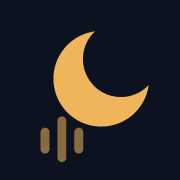

밤사이 코골이
약
중
강
호흡 멈춤 의심
막대 높이는 1분에 코를 곤 횟수, 색은 주변 소음보다 얼마나 컸는지예요. 막대를 누르면 자세히 보여요.
오늘 밤 기록
휴대폰을 머리맡 50cm–1m 거리에 두고 충전기를 꽂은 채 시작하세요. 밤새 녹음한 원본은 저장하지 않고, 소리의 특징과 확인용 짧은 클립만 이 기기에 남겨요.

추가하면 주소창 없이 앱처럼 열리고, 기록도 지워지지 않게 더 안전하게 보관돼요.
Safari와 홈 화면 앱은 기록을 따로 저장해요. 앱을 추가한 뒤에는 앱에서만 녹음하세요.
해당하는 걸 골라 두면 여러 밤을 비교해서 무엇이 코골이를 늘리는지 알려 드려요.
다른 녹음 앱으로 밤새 녹음한 파일(m4a, mp3, wav)도 분석할 수 있어요. 브라우저 메모리 한계 때문에 2시간 이내 파일을 권해요.
리포트
오늘 밤 녹음을 시작하거나, 예시 기록으로 리포트가 어떻게 생겼는지 먼저 살펴보세요.
막대 높이는 1분에 코를 곤 횟수, 색은 주변 소음보다 얼마나 컸는지예요. 막대를 누르면 자세히 보여요.
휴대폰 녹음으로 추정한 값이라 의학적 진단이 아니에요. 수면무호흡은 병원의 수면다원검사로만 확진할 수 있어요.
호흡 멈춤 의심 구간과 코골이 샘플을 짧게 저장해 뒀어요. 직접 들어보고, 진료받을 때 의사에게 들려줄 수 있어요.
여러 밤 비교
3일 이상 기록하면 습관성 코골이인지, 술이나 자세 같은 요인이 얼마나 영향을 주는지 비교해 드려요.
여러 밤 비교
막대를 누르면 그날 리포트로 가요.
요인을 체크한 밤과 체크하지 않은 밤의 평균 코골이 비율 차이예요. 양쪽 모두 2번 이상 기록해야 믿을 만해요.
건강 체크
STOP-Bang은 병원에서 수면무호흡 위험을 가늠할 때 쓰는 8문항 설문이에요. 녹음 결과와 함께 보면 판단이 더 정확해져요.
수면다원검사는 병원에서 하룻밤 자면서 뇌파, 호흡, 혈중 산소, 다리 움직임을 함께 재는 검사예요. 우리나라에서는 2018년 7월부터 수면무호흡이 의심되는 경우 건강보험이 적용돼요. 이비인후과, 신경과, 정신건강의학과의 수면클리닉에서 받을 수 있어요. 진료 갈 때 이 앱의 리포트와 확인용 소리를 보여주면 상담에 도움이 돼요.
기록은 이 기기의 브라우저에만 저장되고 어디에도 보내지 않아요.
녹음 중
방금 시작했어요